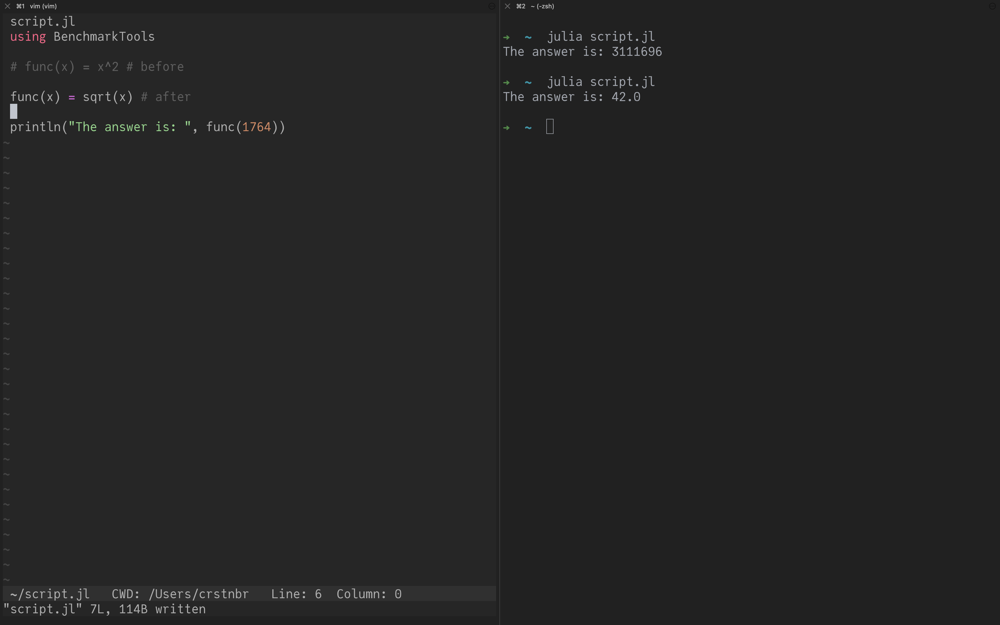
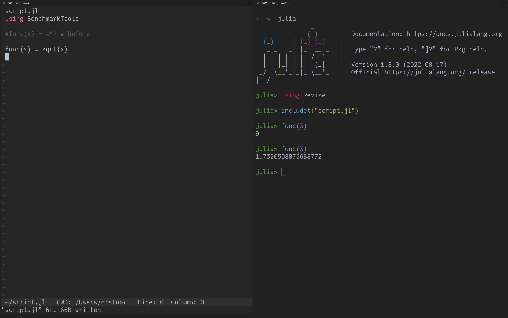
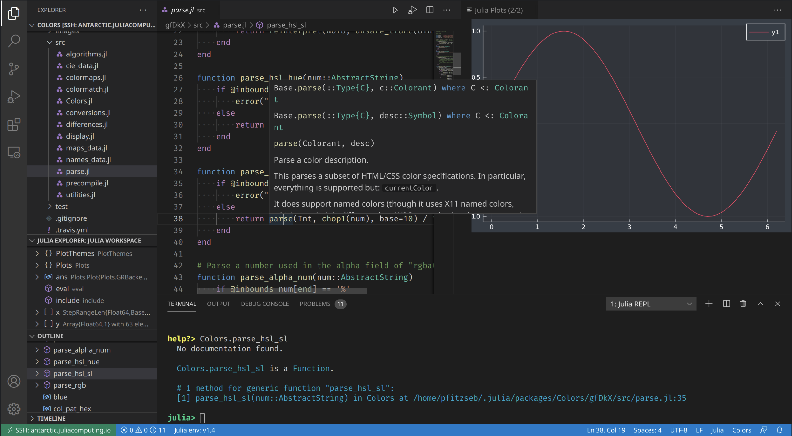

Development Workflow
Contents
Development Workflow#
Traditional: “make a change and rerun the file”#
Pros
conceptually simple
can use any editor
Cons
no interactivity (!)
compilation cost must be paid every time (!)
Julia doesn’t really cache native (binary) code between sessions yet 😔 (It’s on the horizon though.)
This workflow: Only recommended for simple changes (and production runs).
Revise.jl: “track changes in my file”#
(If you wonder why I have syntax highlighting in the Julia REPL, I’m using OhMyREPL.jl)
Based on the Revise.jl package by Tim Holy.
Open
juliaLoad Revise:
using Revise(or put it in~/.julia/config/startup.jl, see here)Include your code with
includet("script.jl")instead ofinclude("script.jl")Alternatively:
using MyPackageif your code is in a package
Whenever there is a change in script.jl (or the source code of your package) it will automatically be reflected in the running Julia session.
Pros
interactivity
see changes almost immediately (small delay)
can use any editor
Cons
has limitations
changing
structs still requires a session restart
This workflow: Recommended if you like a minimal setup.
Visual Studio Code: IDE#
(Image taken from https://www.julia-vscode.org/)
The Julia extension for VS Code is actively maintained.
Basic introduction: Julia in Visual Studio Code
Most important Keybindings:
Open integrated Julia REPL:
Alt-J Alt-OKill integrated Julia REPL:
Alt-J Alt-KRestart integrated Julia REPL:
Alt-J Alt-RExecute a line/block of code:
Shift+EnterandCtrl-Enter(similar to Jupyter notebooks)
Pros
interactivity
lots of integrated features
code completion (IntelliSense)
documentation
workspace view
profiler
debugger
(supports Jupyter notebooks as well)
Cons
not as lightweight / minimal
can sometimes be a bit tricky to set up on remote servers
especially on clusters due to SLURM / PBS and
modules(PC2 documentation has more information, for HAWK it is more tricky)
integrated REPL takes noticeably longer to start due to VSCodeServer / LanguageServer
This workflow: Recommended for bigger development efforts.